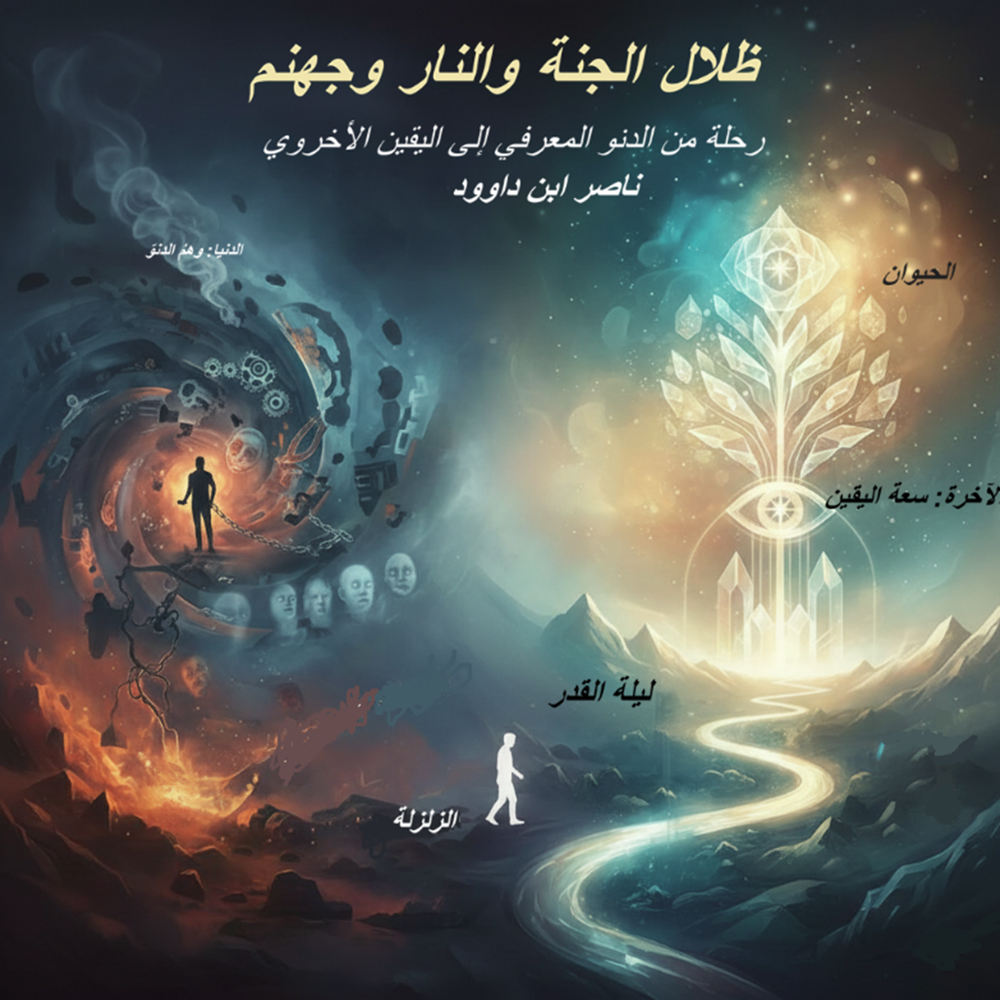

لمن هذا الكتاب؟
- الباحثون في الدراسات القرآنية والفلسفة الإسلامية
- المهتمون بعلم النفس القرآني وتحليل الوعي
- طلاب المعرفة الباحثون عن اليقين في زمن الشكوك
- كل من يسأل: ما طبيعة الجنة والنار؟ وهل يمكن تذوقهما في الدنيا؟
المفاهيم المفتاحية
- الدُّنوّ: الدنيا كحالة انخفاض إدراكي، لا مجرد زمن.
- النُّمو: جهنم كـ"جهة نمو" خاطئ (جه + نم).
- الاحتراق: النار كبنية داخلية تبدأ بالقلق والضيق.
- السكينة: انتظام داخلي ناتج عن اتصال صحيح بالحق.
- الحفريات النفسية: منهج لتنقية الداخل من الأثقال الموروثة.
القوانين الحاكمة
قوانين العطب الإدراكي:
- التراكم الصامت (الرين)
- الانطفاء التدريجي (صم بكم عمي)
- التبرير الذاتي (المعاذير)
- الختم التدريجي (فلما زاغوا أزاغ الله قلوبهم)
قوانين السلامة الإدراكية:
- الاستجابة المبكرة (سمعنا وأطعنا)
- تنقية القلب المستمرة (قد أفلح من زكاها)
- المراجعة الذاتية (ولتنظر نفس ما قدمت لغد)
- البناء التراكمي للنور (نور على نور)
المقدمة العامة: من الحرف إلى الوعي
هذا الكتاب ليس مجرد تفسير للنصوص أو جمع للروايات، بل هو رحلة في جوهر "البيان الإلهي" لاستعادة صلة الوعي بالحقيقة. ينطلق المشروع من رؤية فلسفية تعتبر الحرف القرآني إشارة وجودية، تسري في الكائنات كما يسري الروح في الجسد، ليكون مرآة لله في قلب الإنسان.
يجمع العمل بين مرحلتين من التدبر؛ ليربط بين "حقائق الوجود" كما نعيشها، وبين "اليقين الأخروي" كما ينكشف للوعي المستنير. إنه دعوة للانتقال من "الدنو المعرفي" والحالة المادية الضيقة، إلى رحابة "اليقين" حيث تصبح الموجودات صفحات ناطقة بلسان الله المنظور.
أقسام الكتاب الرئيسية
١. ظلال الجنة والنار
حقائق الوجود بين الدنيا والآخرة – قراءة في الأوصاف الحسية وكشف معانيها الباطنية.
٢. جهنم: جهة النمو
تحليل لساني وبنيوي لمفهوم جهنم كاتجاه نمو سلبي يختاره الإنسان.
٣. الدنيا والآخرة
الدنيا كحالة دنو معرفي، والآخرة كخروج إلى سعة اليقين.
٤. السكينة والاحتراق
السلام الداخلي مقابل القلق الوجودي: رؤية بنيوية.
٥. الرسم العثماني كخريطة طريق
الكود الإلهي الذي يضبط حركة العقل بين الشهادة والغيب.
٦. منهج الحفريات النفسية
كيف ينقب الإنسان في داخله ليحرر نفسه من الأثقال الموروثة.
ملخص الكتاب
يقدم الكتاب رؤية متكاملة للعلاقة بين الدنيا والآخرة، حيث الجنة والنار ليما مجرد مصيرين بعد الموت، بل هما خياران معرفيان نعيش ظلالهما اليوم. فـ"جهنم" هي جهة النمو التي نختارها؛ إما نمو في النور أو نمو في الوسوسة والقلق. و"السكينة" هي الثمرة الطبيعية للاتصال بالحق. ويعتمد الكتاب على "الرسم العثماني" ككود إلهي يحرس هذه المعاني من الاندثار، ويدعو إلى "الحفريات النفسية" كمنهج للتحرر.
"إن الدنيا والآخرة هما مساران متاحان للإنسان في كل لحظة. كلما ارتقيت بعلمك ويقينك، خرجت من دنياك ودخلت في آخرتك وأنت لا تزال تمشي على الأرض."
الجنة الدنيوية والنار الدنيوية
الجنة الدنيوية: حالة من الهداية والنور، الطمأنينة، الجمال الباطني، العطاء، الأمن من الخوف والحزن.
النار الدنيوية (جهنم المعجلة): حالة من التيه بين الظنون، احتراق الروح بالأنا، سجن الموروث الضال، الحرمان من برد السلام.